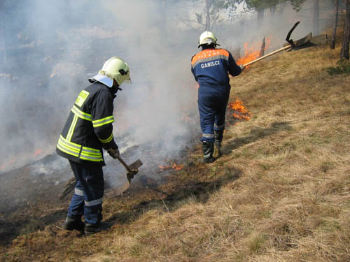
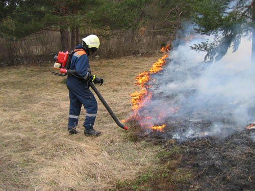
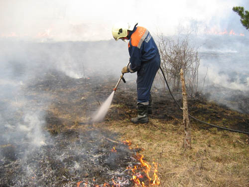
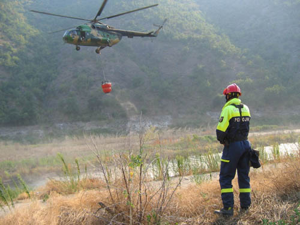

ORODJE, NAPRAVE IN SREDSTVA ZA GAŠENJE POŽAROV V NARAVI
Za gašenje požarov lahko uporabljamo:
- priročna gasilna sredstva (borove veje, pesek...)
- ročno orodje (metle za gašenje, sekire, mačete, grablje, lopate...)

- prenosne naprave (nahrbtne škropilnice, izpihovalniki zraka, motorne žage, prenosne črpalke z armaturami...)

- prevozna oprema in naprave (visokotlačne naprave za gašenje, rezervoarji za vodo, črpalke z armaturami in cevmi...)

- vozila (GVGP, GCGP …) in druga mehanizacija (buldožer...)
- zračne sile (helikopterji, letala)

Največkrat uporabljeno sredstvo zračnih sil so helikopterji Slovenske vojske, katerih aktiviranje lahko zahteva vodja intervencije preko pristojnega Regijskega centra za obveščanje. Pred prihodom helikopterjev moramo predvideti mesto pristanka in oskrbo bazena z vodo. Začasni heliodrom mora imeti primerno utrjeno talno površino. Naklon ne sme presegati 5 stopinj in mora biti premera najmanj 50 metrov. V oddaljenosti najmanj 100 metrov od točke pristanka ne sme biti ovire, višje od 10 metrov (daljnovod, drevesa, zgradbe …). Zaželena je urejena komunalna infrastruktura. Za osvetlitev v nočnem času uporabimo luči vozil, ki jih okoli heliodroma postavimo centrično. Zagotoviti moramo konstantno polnjenje bazena z vodo. Bazen praviloma helikopter pripelje s seboj. Pri gašenju z zrakoplovi se moramo zavedati, da je njihovo delovanje omejeno. Še nobena bitka ni bila dosežena samo iz zraka, ampak vedno ob izdatni podpori pehote. In to nam naj bo tudi vodilo pri gašenju ob pomoči zračnih sil.